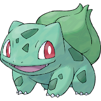
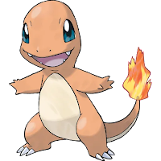
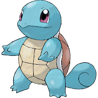

Kanto encontra-se ao leste de Johto; as duas regiões presumivelmente tornam-se um pequeno continente. O Sul de Kanto são as Ilhas Sevii e as Ilhas Laranja. Hoenn, introduzida em Pokémon Ruby e Sapphire, é supostamente mais para o sudoeste. Supostamente, para o norte do continente é a região de Sinnoh. Unova tem uma distância considerável, e não se sabe a distância de Kalos em relação a Kanto. As Rotas localizadas dentro de Kanto são numeradas de 1 a 25; as rotas 26, 27 e 28 conectam Kanto com Johto.
Provavelmente o trio mais icônico entre os jogadores mais velhos da franquia, Bulbassauro, Charmander e Squirtle marcaram era como os primeiros Pokémon usados para explorar a região de Kanto.
Bulbasaur é o Pokémon inicial de planta, provavelmente inspirado em um réptil pré-histórico. Durante o anime e nos jogos, o Pokédex diz que a semente em suas costas foi plantada enquanto Bulbasaur ainda era um bebê e a planta cresce com ele. Este bulbo concede nutrientes e poder para seu movimento mais forte, o Raio Solar (SolarBeam), em que Bulbasaur captura luz solar e depois a dispara em seu oponente. Bulbasaur evolui para Ivysaur no nível 16 e para Venusaur no nível 32.
Charmander é o Pokémon inicial de fogo inspirado em uma Salamandra Mágica, adaptado para um Dragão no Horóscopo Chinês. Nos jogos e anime, o Pokédex diz que o fogo no fim de sua cauda indica a condição de sua saúde, ou seja, quanto mais forte brilhar, mais saudável Charmander se encontra, preferindo obviamente locais mais quentes, para que sua chama não sofra riscos. Seu movimento mais notável e brutalmente forte é o famoso Lança-chamas (Flamethrower). Charmander evolui para Charmeleon no nível 16 e para Charizard no nível 36.
Squirtle é o Pokémon inicial de água, sendo claramente inspirado em espécies de tartaruga. O Pokédex do anime e dos jogos refere-se a ele como "a pequenina tartaruga", dando ênfase para seu casco muito poderoso e resistente que concede a ele fortíssimos movimentos tipo água e uma incrível defesa. Seu melhor movimento é o Hidro Bomba (Hydro Pump). Squirtle evolui para Wartortle no nível 16 e para Blastoise no nível 36.
